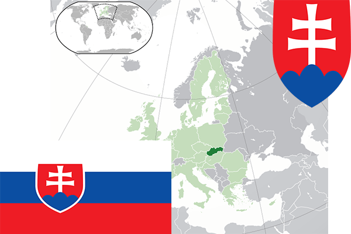

To`liq nomi: Slovak Respublikasi
Region: Markaziy Yevropa
Qonunchilik shakli: Respublika
Mustaqillik kuni: 1-yanvar 1993-yil
Poytaxt: Bratislava
Maydoni: 48,845 km²
Chegaradosh davlatlari: Chexiya, Avstriya, Polsha, Vengriya, Ukraina.
Aholisi: 5,435,343 (2016-yil)
Aholi zichligi: 111/km2
Aholining o`rtacha yoshi: 77,02 yil
Rasmiy tili: Slovak tili
Dini: Xristian
Pul birligi: Yevro
Telefon prefiksi: +421
Internet domen: .sk
Xalqaro tashkilotlarga a`zoligi: BMT, YeI
Dengiz va okeanlarga chiqishi: Yo’q
YIM: Butun: $89.1 mlrd(2017-yil) Jon boshiga: $19,128
Yirik shaharlari: Bratislava, Kosike, Presov